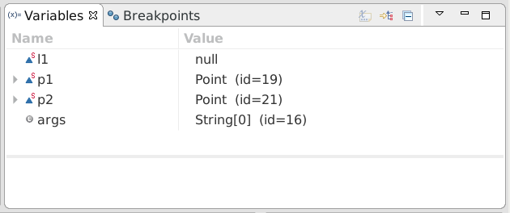

This task explores the concept of static fields and methods
and how they differ from regular fields and methods. You have
already encountered static methods, the methods
main in our previous
tasks, but we never really discussed what that
qualifier static
meant. We also encountered static fields, when we
did our first games.
With object-oriented programming, classes and objects
are the two concepts at the center of the programming
paradigm. As we already discussed, a class defines
both fields and methods. The fields are found in
each object, instance of that class.
The methods can be invoked on each object,
instance of that class.
There is just no concept of static methods or static
fields in regular object-oriented programming.
The concept of static methods and fields is specific
to the Java programming language. In some sense,
static fields and methods are closer to global variables
and functions than they are related to objects.
In fact, static fields and methods are not related
to any objects. Static fields and methods are defined
on the class, but they do not apply to the objects
that are instances of that class.
Static methods are defined on classes and
qualified with the static
keyword. But the distinction from regular methods
is much more important than just a mere qualifier
would suggest.
The most important difference is that a static method
has no receiver. In other words, a static method is not
invoked on an object, like a regular method. Therefore,
a static method does not have a built-in variable called
this. In that sense, a
static method is really a function, like a function
in the C programming language or JavaScript.
Look at the main methods we encountered so far, none used this. Try and the Java compiler will complain. Let's go back to our HelloWorld program.
public class HelloWorld {
public static void main(String[] args) {
System.out.println("Hello World!");
return;
}
}
As you can see, we do not create any object. Let's try to rewrite the code, using a static method.
public class HelloWorld {
public static void main(String[] args) {
say("Hello World!");
return;
}
static void say(String msg) {
System.out.println(msg);
return;
}
}
See, we really have a function, called HelloWorld.main, calling another function, called HelloWorld.say. In fact, you can call static methods across different classes using exactly that syntax.
public class HelloWorld {
public static void main(String[] args) {
Speaker.say("Hello World!");
return;
}
}
public class Speaker {
public static void say(String msg) {
System.out.println(msg);
return;
}
}
And of course, if you involve packages, the actual name gets longer, as the real name of a class includes the name of its package.
public class HelloWorld {
public static void main(String[] args) {
edu.common.Speaker.say("Hello World!");
return;
}
}
package edu.common;
public class Speaker {
static void say(String msg) {
System.out.println(msg);
return;
}
}
Although static methods are more functions than methods,
it does not mean that they are not sometimes very usefull.
Nevertheless, we suggest that you
refrain as much as possible from using them. The more you use
static methods, the less likely you will ever understand and
master object-oriented programming. So say that static
methods are evil and adopting them is to turn to the dark
side. And remember, Yoda is right,
"fear the dark side".
But one needs to know the dark side to avoid it. So look at the class Operations below. It defines a static method translate, it is therefore a function rather than a method.
class Operations {
static void translate(Point self, int dx, int dy, int dz) {
self.x += dx;
self.y += dy;
self.z += dz;
}
}
See how we are forced to pass an object explicitly, as there is no built-in variable this. To have a point object to work with, we have to explicitly add an argument self. Look below at how to use a static method:
static public void main(String args[]) {
Point p = new Point();
Operations.translate(p,5,10,3);
}
Now compare the code snippet above with the one below, showing you how to use the real method translate defined on the class Point:
static public void main(String args[]) {
Point p = new Point();
p.translate(5,10,3);
}
Now you know one of the main differences between a method and a function,
there are others as we will discover throughout this workshop, but this
is the most fundamental difference: the receiver.
Remember, static methods are evil, they are functions disguised as
methods, they intent to trap your mind in function-oriented programming
forever, never letting you see the light and power of object-oriented
programming. As Morpheus would say: "Free you mind, Neo".
To sum up, functions are methods that are
declared static,
they are not invoked on an object,
they do not have the built-in variable this.
Because they are declared static in Java, functions are often called
static methods, but this is a misnomer.
Sometimes, static methods are called class methods, because they are
defined as part of a class. But this is even worse.
Let people call them what they want, just remember, they are global functions,
not methods applied on an object. And do not use them unless you really have to.
Static fields are another path to the dark side, they are global variables
in disguise. If you have coded before in other programming languages,
you already have been warned about the dangers of using global variables.
You may have been burned using them.
But let's be honest, everybody criticize global variables, but
sometimes, they are usefull and even unavoidable.
But always refrain to use them as much as you can.
We have seen one common use of a static variable since the beginning, with the use of System.out.
static public void main(String args[]) {
System.out.println("Hello World!");
}
The class System represents your system, that is,
the underlying operating system on which your program runs.
As any program that runs on an operating system,
your program gets the ability to interact with its environment
through various character streams. These are the well-know
standard input, output, and error streams.
In C, they are called stdin, stdout, stderr.
These streams are global objects, so Java decided to use three static fields
in the class System.
This is how the HelloWorld program actually printed out the string
"Hello World!". In this case, the static field
in in the class
System is a reference field.
But of course, a static field can be of any primitive type as well,
for instance it can be an integer value or a float value.
Notice that naming convention for accessing fields is the same convention that was used to call static methods.
Let's look at code written with static methods and fields.
Look at the code in the step3 source folder.
We just took some earlier code, about points and lines,
and used only static methods and fields. As you can
see, it is possible.
Launch the execution, under debugger, with a breakpoint
in the method main
on the class JavaBasicsStep3.
Do you notice something as you single step with F6?
Look at the Variables view...
Indeed, there is nothing there. As you can see, Eclipse developers are not really expecting you to use static methods and fields only. You can coerce the debugger to show you static fields:

As you can see, in the screen capture above, Eclipse
is showing the static variables. To get that, click
on the triangular drop-down icon on the upper left-hand-side
corner, select Java and then Show Static Variables.
But again, we ask you to refrain from using static fields and methods
as much as you can.
class Foo {
static int s;
int f;
static void foo() {
s = f;
}
static void bar(Foo f) {
s = f.f;
}
}
Can the method foo access the field s?
Can the method foo access the field f?
Can the method bar access the field f?